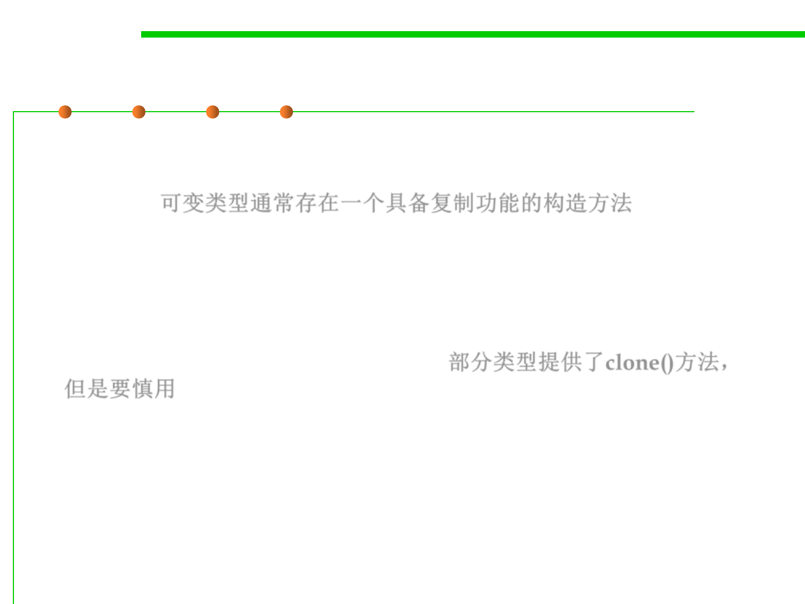

Copy and Clone()
3.4 Object-Oriented Programming (OOP)
▪ Mutable types often have a copy constructor that allows you to
make a new instance that duplicates the value of an existing
instance. 可变类型通常存在一个具备复制功能的构造方法
– In this case, Date ’s copy constructor uses the timestamp value, measured
in milliseconds since January 1, 1970.
– As another example, StringBuilder ’s copy constructor takes a String .
▪ Another way to copy a mutable object is clone() , which is
supported by some types but not all. 部分类型提供了clone()方法，
但是要慎用